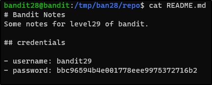

n the beginning God created heaven, and earth. And the earth was void and empty, and darkness was upon the face of the deep; and the spirit of God moved over the waters. And God said: Be light made. And light was made. And God saw the light that it was good; and he divided the light from the darkness. And he called the light Day, and the dark-ness Night; and there was evening and morning

And there went out another horse that was red: and to him that sat thereon, it was given that he should take peace from the earth, and that they should kill one another, and a great sword was given to him..

And when he had opened the third seal, I heard the third living creature saying: Come,and see. And behold a black horse, and he that sat on him had a pair of scales in his hand.